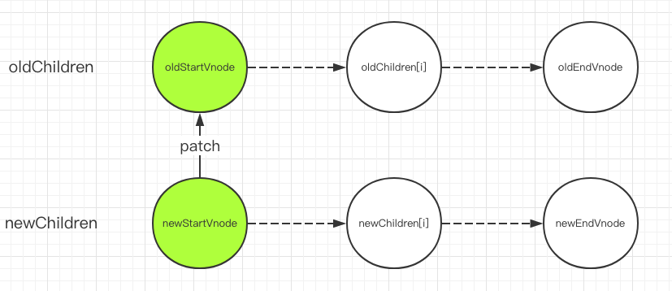
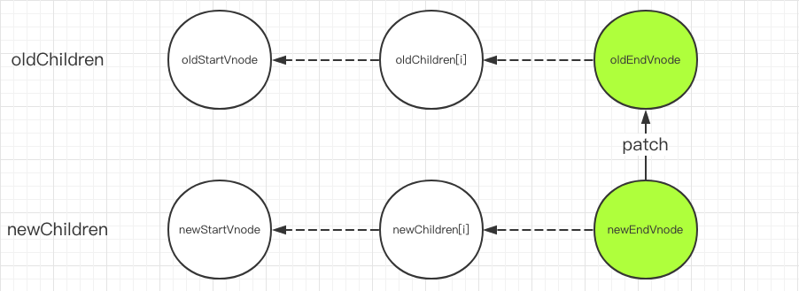
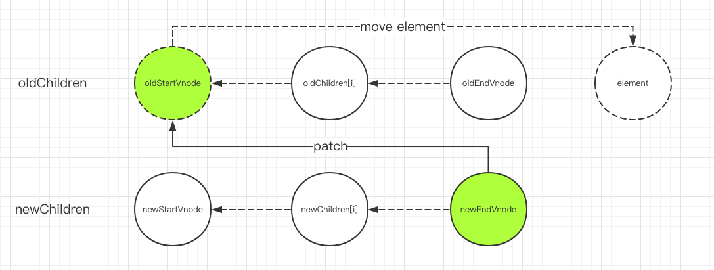
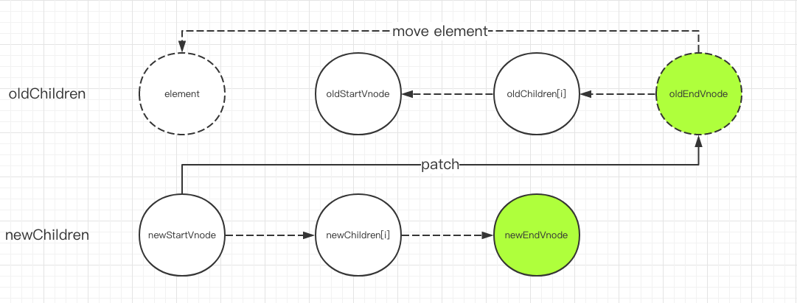
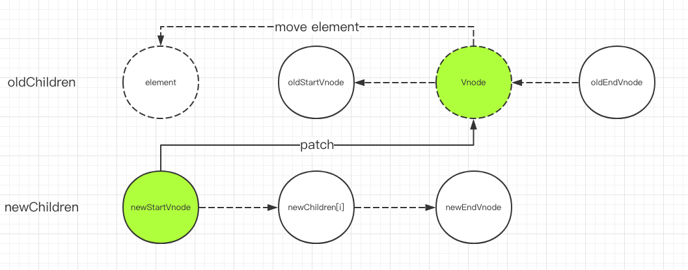

1. sameVnode
function sameVnode (a, b) {
return (
a.key === b.key && (
(
a.tag === b.tag &&
a.isComment === b.isComment &&
isDef(a.data) === isDef(b.data) &&
sameInputType(a, b)
) || (
isTrue(a.isAsyncPlaceholder) &&
a.asyncFactory === b.asyncFactory &&
isUndef(b.asyncFactory.error)
)
)
)
}
2. Patch
function patch (oldVnode, vnode, hydrating, removeOnly) {
if (isUndef(vnode)) {
if (isDef(oldVnode)) invokeDestroyHook(oldVnode)
return
}
let isInitialPatch = false
const insertedVnodeQueue = []
if (isUndef(oldVnode)) {
// empty mount (likely as component), create new root element
isInitialPatch = true
createElm(vnode, insertedVnodeQueue)
} else {
const isRealElement = isDef(oldVnode.nodeType)
if (!isRealElement && sameVnode(oldVnode, vnode)) {
// patch existing root node
patchVnode(oldVnode, vnode, insertedVnodeQueue, null, null, removeOnly)
} else {
if (isRealElement) {
// mounting to a real element
// check if this is server-rendered content and if we can perform
// a successful hydration.
if (oldVnode.nodeType === 1 && oldVnode.hasAttribute(SSR_ATTR)) {
oldVnode.removeAttribute(SSR_ATTR)
hydrating = true
}
if (isTrue(hydrating)) {
if (hydrate(oldVnode, vnode, insertedVnodeQueue)) {
invokeInsertHook(vnode, insertedVnodeQueue, true)
return oldVnode
} else if (process.env.NODE_ENV !== 'production') {
warn(
'The client-side rendered virtual DOM tree is not matching ' +
'server-rendered content. This is likely caused by incorrect ' +
'HTML markup, for example nesting block-level elements inside ' +
'<p>, or missing <tbody>. Bailing hydration and performing ' +
'full client-side render.'
)
}
}
// either not server-rendered, or hydration failed.
// create an empty node and replace it
oldVnode = emptyNodeAt(oldVnode)
}
// replacing existing element
const oldElm = oldVnode.elm
const parentElm = nodeOps.parentNode(oldElm)
// create new node
createElm(
vnode,
insertedVnodeQueue,
// extremely rare edge case: do not insert if old element is in a
// leaving transition. Only happens when combining transition +
// keep-alive + HOCs. (#4590)
oldElm._leaveCb ? null : parentElm,
nodeOps.nextSibling(oldElm)
)
// update parent placeholder node element, recursively
if (isDef(vnode.parent)) {
let ancestor = vnode.parent
const patchable = isPatchable(vnode)
while (ancestor) {
for (let i = 0; i < cbs.destroy.length; ++i) {
cbs.destroy[i](ancestor)
}
ancestor.elm = vnode.elm
if (patchable) {
for (let i = 0; i < cbs.create.length; ++i) {
cbs.create[i](emptyNode, ancestor)
}
// #6513
// invoke insert hooks that may have been merged by create hooks.
// e.g. for directives that uses the "inserted" hook.
const insert = ancestor.data.hook.insert
if (insert.merged) {
// start at index 1 to avoid re-invoking component mounted hook
for (let i = 1; i < insert.fns.length; i++) {
insert.fns[i]()
}
}
} else {
registerRef(ancestor)
}
ancestor = ancestor.parent
}
}
// destroy old node
if (isDef(parentElm)) {
removeVnodes(parentElm, [oldVnode], 0, 0)
} else if (isDef(oldVnode.tag)) {
invokeDestroyHook(oldVnode)
}
}
}
invokeInsertHook(vnode, insertedVnodeQueue, isInitialPatch)
return vnode.elm
}
- 如果 vnode不存在但是oldVnode存在，调用invokeDestroyHook(oldVnode)销毁旧节点
- 如果 oldVnode不存在但是vnode存在，调用createElm创建新节点
- 当vnode和oldVnode都存在时
- 如果oldVnode和vnode是同一个节点，调用patchVnode
- 当vnode和oldVnode不是同一个节点时，如果oldVnode是真实dom节点或hydrating设置为true，需要用hydrate函数将虚拟dom和真实dom进行映射，然后将oldVnode设置为对应的虚拟dom，找到oldVnode.elm的父节点，根据vnode创建一个真实dom节点并插入到该父节点中oldVnode.elm的位置
3. patchVnode
function patchVnode (
oldVnode,
vnode,
insertedVnodeQueue,
ownerArray,
index,
removeOnly
) {
if (oldVnode === vnode) {
return
}
if (isDef(vnode.elm) && isDef(ownerArray)) {
// clone reused vnode
vnode = ownerArray[index] = cloneVNode(vnode)
}
const elm = vnode.elm = oldVnode.elm
if (isTrue(oldVnode.isAsyncPlaceholder)) {
if (isDef(vnode.asyncFactory.resolved)) {
hydrate(oldVnode.elm, vnode, insertedVnodeQueue)
} else {
vnode.isAsyncPlaceholder = true
}
return
}
// reuse element for static trees.
// note we only do this if the vnode is cloned -
// if the new node is not cloned it means the render functions have been
// reset by the hot-reload-api and we need to do a proper re-render.
if (isTrue(vnode.isStatic) &&
isTrue(oldVnode.isStatic) &&
vnode.key === oldVnode.key &&
(isTrue(vnode.isCloned) || isTrue(vnode.isOnce))
) {
vnode.componentInstance = oldVnode.componentInstance
return
}
let i
const data = vnode.data
if (isDef(data) && isDef(i = data.hook) && isDef(i = i.prepatch)) {
i(oldVnode, vnode)
}
const oldCh = oldVnode.children
const ch = vnode.children
if (isDef(data) && isPatchable(vnode)) {
for (i = 0; i < cbs.update.length; ++i) cbs.update[i](oldVnode, vnode)
if (isDef(i = data.hook) && isDef(i = i.update)) i(oldVnode, vnode)
}
if (isUndef(vnode.text)) {
if (isDef(oldCh) && isDef(ch)) {
if (oldCh !== ch) updateChildren(elm, oldCh, ch, insertedVnodeQueue, removeOnly)
} else if (isDef(ch)) {
if (process.env.NODE_ENV !== 'production') {
checkDuplicateKeys(ch)
}
if (isDef(oldVnode.text)) nodeOps.setTextContent(elm, '')
addVnodes(elm, null, ch, 0, ch.length - 1, insertedVnodeQueue)
} else if (isDef(oldCh)) {
removeVnodes(elm, oldCh, 0, oldCh.length - 1)
} else if (isDef(oldVnode.text)) {
nodeOps.setTextContent(elm, '')
}
} else if (oldVnode.text !== vnode.text) {
nodeOps.setTextContent(elm, vnode.text)
}
if (isDef(data)) {
if (isDef(i = data.hook) && isDef(i = i.postpatch)) i(oldVnode, vnode)
}
}
- 如果oldVnode跟vnode完全一致，return
- 如果oldVnode跟vnode都是静态节点，且具有相同的key，当vnode是克隆节点或是v-once指令控制的节点时，只需要把oldVnode.elm和oldVnode.child都复制到vnode上，不再有其他操作
- 如果vnode不是文本节点或注释节点
- 如果oldVnode和vnode都有子节点，且双方的子节点不完全一致，执行updateChildren
- 如果只有vnode有子节点，创建这些子节点
- 如果只有oldVnode有子节点，把这些节点都删除
- 如果oldVnode和vnode都没有子节点，但是oldVnode是文本节点或注释节点，把vnode.elm的文本设置为空字符串
- 如果vnode是文本节点或注释节点，但是vnode.text != oldVnode.text时，只需要更新vnode.elm的文本内容
4. updateChildren
function updateChildren (parentElm, oldCh, newCh, insertedVnodeQueue, removeOnly) {
let oldStartIdx = 0
let newStartIdx = 0
let oldEndIdx = oldCh.length - 1
let oldStartVnode = oldCh[0]
let oldEndVnode = oldCh[oldEndIdx]
let newEndIdx = newCh.length - 1
let newStartVnode = newCh[0]
let newEndVnode = newCh[newEndIdx]
let oldKeyToIdx, idxInOld, vnodeToMove, refElm
// removeOnly is a special flag used only by <transition-group>
// to ensure removed elements stay in correct relative positions
// during leaving transitions
const canMove = !removeOnly
if (process.env.NODE_ENV !== 'production') {
checkDuplicateKeys(newCh)
}
while (oldStartIdx <= oldEndIdx && newStartIdx <= newEndIdx) {
if (isUndef(oldStartVnode)) {
oldStartVnode = oldCh[++oldStartIdx] // Vnode has been moved left
} else if (isUndef(oldEndVnode)) {
oldEndVnode = oldCh[--oldEndIdx]
} else if (sameVnode(oldStartVnode, newStartVnode)) {
patchVnode(oldStartVnode, newStartVnode, insertedVnodeQueue, newCh, newStartIdx)
oldStartVnode = oldCh[++oldStartIdx]
newStartVnode = newCh[++newStartIdx]
} else if (sameVnode(oldEndVnode, newEndVnode)) {
patchVnode(oldEndVnode, newEndVnode, insertedVnodeQueue, newCh, newEndIdx)
oldEndVnode = oldCh[--oldEndIdx]
newEndVnode = newCh[--newEndIdx]
} else if (sameVnode(oldStartVnode, newEndVnode)) { // Vnode moved right
patchVnode(oldStartVnode, newEndVnode, insertedVnodeQueue, newCh, newEndIdx)
canMove && nodeOps.insertBefore(parentElm, oldStartVnode.elm, nodeOps.nextSibling(oldEndVnode.elm))
oldStartVnode = oldCh[++oldStartIdx]
newEndVnode = newCh[--newEndIdx]
} else if (sameVnode(oldEndVnode, newStartVnode)) { // Vnode moved left
patchVnode(oldEndVnode, newStartVnode, insertedVnodeQueue, newCh, newStartIdx)
canMove && nodeOps.insertBefore(parentElm, oldEndVnode.elm, oldStartVnode.elm)
oldEndVnode = oldCh[--oldEndIdx]
newStartVnode = newCh[++newStartIdx]
} else {
if (isUndef(oldKeyToIdx)) oldKeyToIdx = createKeyToOldIdx(oldCh, oldStartIdx, oldEndIdx)
idxInOld = isDef(newStartVnode.key)
? oldKeyToIdx[newStartVnode.key]
: findIdxInOld(newStartVnode, oldCh, oldStartIdx, oldEndIdx)
if (isUndef(idxInOld)) { // New element
createElm(newStartVnode, insertedVnodeQueue, parentElm, oldStartVnode.elm, false, newCh, newStartIdx)
} else {
vnodeToMove = oldCh[idxInOld]
if (sameVnode(vnodeToMove, newStartVnode)) {
patchVnode(vnodeToMove, newStartVnode, insertedVnodeQueue, newCh, newStartIdx)
oldCh[idxInOld] = undefined
canMove && nodeOps.insertBefore(parentElm, vnodeToMove.elm, oldStartVnode.elm)
} else {
// same key but different element. treat as new element
createElm(newStartVnode, insertedVnodeQueue, parentElm, oldStartVnode.elm, false, newCh, newStartIdx)
}
}
newStartVnode = newCh[++newStartIdx]
}
}
if (oldStartIdx > oldEndIdx) {
refElm = isUndef(newCh[newEndIdx + 1]) ? null : newCh[newEndIdx + 1].elm
addVnodes(parentElm, refElm, newCh, newStartIdx, newEndIdx, insertedVnodeQueue)
} else if (newStartIdx > newEndIdx) {
removeVnodes(parentElm, oldCh, oldStartIdx, oldEndIdx)
}
}
分别获取oldVnode和vnode的firstChild、lastChild，赋值给oldStartVnode、oldEndVnode、newStartVnode、newEndVnode
如果oldStartVnode和newStartVnode是同一节点，调用patchVnode进行patch，然后将oldStartVnode和newStartVnode都设置为下一个子节点，重复上述流程

如果oldEndVnode和newEndVnode是同一节点，调用patchVnode进行patch，然后将oldEndVnode和newEndVnode都设置为上一个子节点，重复上述流程

如果oldStartVnode和newEndVnode是同一节点，调用patchVnode进行patch，如果removeOnly是false，那么可以把oldStartVnode.elm移动到oldEndVnode.elm之后，然后把oldStartVnode设置为下一个节点，newEndVnode设置为上一个节点，重复上述流程

如果newStartVnode和oldEndVnode是同一节点，调用patchVnode进行patch，如果removeOnly是false，那么可以把oldEndVnode.elm移动到oldStartVnode.elm之前，然后把newStartVnode设置为下一个节点，oldEndVnode设置为上一个节点，重复上述流程

如果以上都不匹配，就尝试在oldChildren中寻找跟newStartVnode具有相同key的节点，如果找不到相同key的节点，说明newStartVnode是一个新节点，就创建一个，然后把newStartVnode设置为下一个节点
如果上一步找到了跟newStartVnode相同key的节点，通过其他属性的比较来判断这两个节点是否是同一个节点
- 如果是，调用patchVnode进行patch，如果removeOnly是false，就把newStartVnode.elm插入到oldStartVnode.elm之前，把newStartVnode设置为下一个节点，重复上述流程

- 如果key相同但不是同一节点，创建新节点插入到oldStartVnode.elm之前
如果在oldChildren中没有找到newStartVnode的同一节点，创建新节点插入到oldStartVnode.elm之前，把newStartVnode设置为下一个节点，重复上述流程
如果oldStartVnode小于等于oldEndVnode，并且newStartVnode小于等于newEndVnode，执行循环体；否则退出循环
如果oldStartIdx > oldEndIdx，oldCh先遍历完。此时newStartIdx和newEndIdx之间的vnode是新增的，调用addVnodes，addVnodes调用insertBefore操作dom节点
如果newStartIdx > newEndIdx，newCh先遍历完。此时oldStartIdx和oldEndIdx之间的vnode在新的子节点里已经不存在了，调用removeVnodes删除